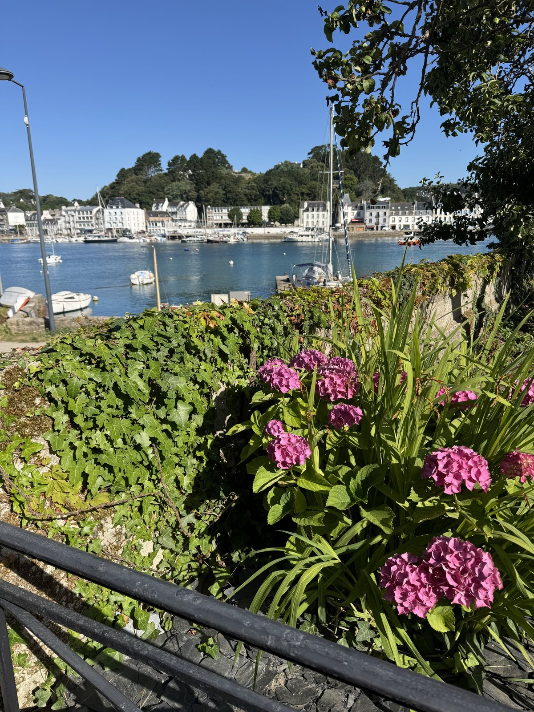
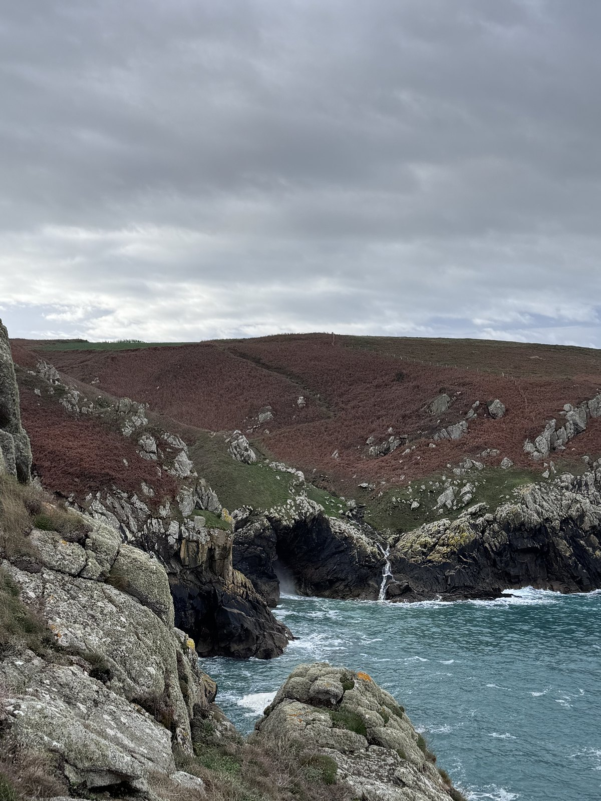
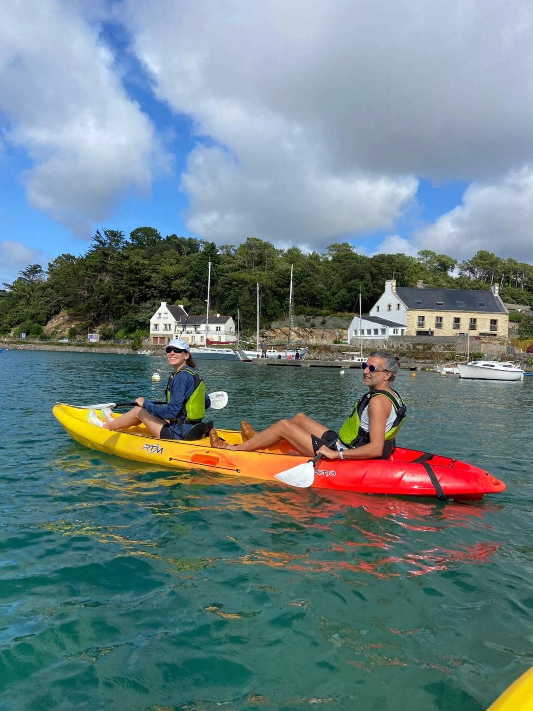
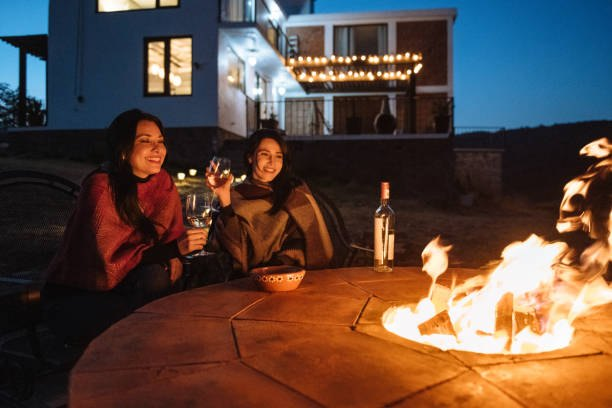
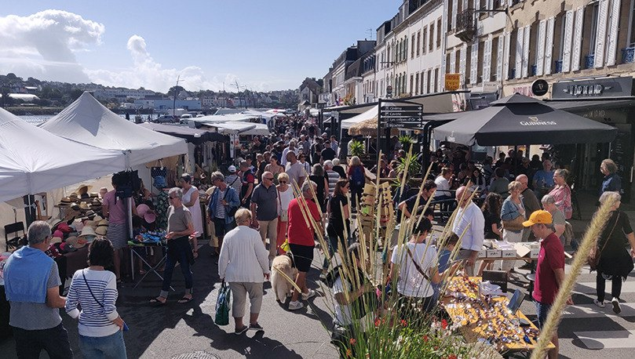
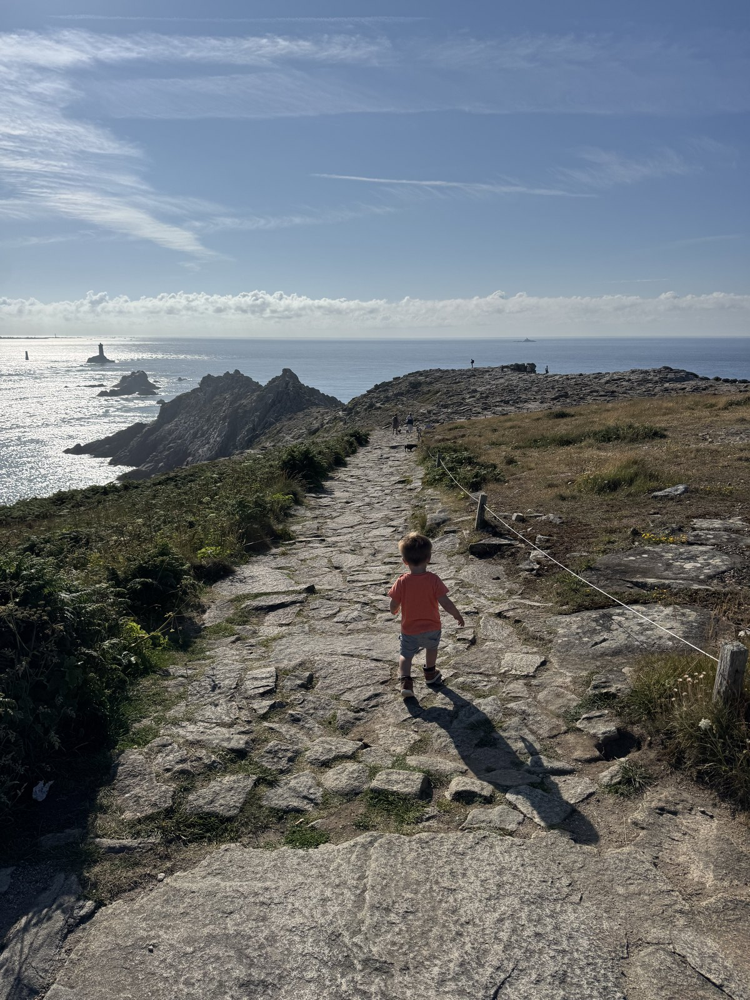
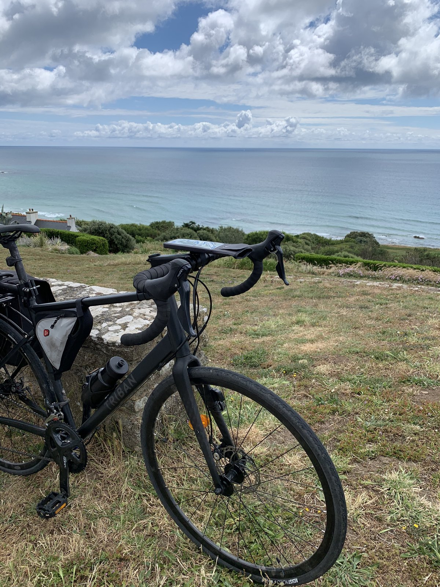
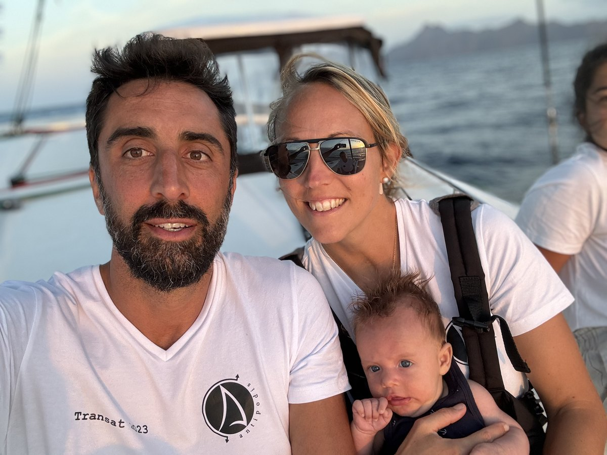

jardin · famille · dehors
Un jardin sur la mer
Un appartement fait pour vivre dehors : café au soleil, dîner dans le jardin, port en toile de fond et accès immédiat au rythme du Goyen.
Découvrir l’appartementplouhinec · audierne · finistère
Des appartements uniques, lumineux et confortables, dans une bâtisse historique au bord de l’estuaire du Goyen.
une ancienne voilerie, un nouveau lieu de séjour
Au Clos de la Voilerie, on vient pour ralentir, respirer l’air marin et profiter d’une Bretagne vivante : le port, les marées, les chemins côtiers, les marchés, les retours de plage et les soirées dehors.
Chaque appartement a son caractère, mais tous partagent la même situation rare : une résidence de charme, face à l’eau, dans un lieu simple, lumineux et profondément breton.
toute l’année
Longues soirées d’été, grandes marées, lumière d’automne, balades vivifiantes ou week-ends cocooning : chaque saison donne une autre raison de venir.


trois ambiances
Jardin, balcon ou refuge sous les toits : trois appartements, une même adresse face à l’estuaire.
jardin · famille · dehors
Un appartement fait pour vivre dehors : café au soleil, dîner dans le jardin, port en toile de fond et accès immédiat au rythme du Goyen.
Découvrir l’appartement
lumière · confort · port
Un lieu lumineux et confortable pour profiter des marées, des couchers de soleil et des journées entre port, plages et sentiers côtiers.
Découvrir l’appartement
cocon · velux · charme
Petit, chaleureux et plein de charme : un cocon sous les poutres, idéal pour quelques jours à deux, entre lumière de mer et calme breton.
Découvrir l’appartementvivre la côte autrement
Le Clos de la Voilerie est pensé comme un point de départ pour explorer, marcher, goûter, pagayer, regarder les lumières changer et rentrer le soir avec du sel dans les cheveux.




Plages sauvages, criques, falaises et Pointe du Raz : les paysages changent vite, souvent avec une lumière spectaculaire.

On part facilement pour quelques heures dehors, entre sentiers côtiers, petites routes, ports et points de vue.

notre histoire
Nous sommes une famille de navigateurs. La mer fait partie de notre quotidien, de nos projets et de notre manière de regarder les lieux.
Quand nous avons découvert cette ancienne voilerie au bord du Goyen, nous avons immédiatement aimé son caractère : les pierres, la lumière, la proximité du port et cette sensation rare d’être à la fois dans un village vivant et face à l’eau.
Le Clos de la Voilerie est né de cette envie : créer des appartements simples, confortables et chaleureux, mais surtout ancrés dans leur paysage. Un lieu où l’on vient pour dormir, bien sûr — mais aussi pour respirer, regarder les marées et repartir avec un vrai souvenir de Bretagne.
préparer votre séjour
Dites-nous vos dates, le nombre de voyageurs et l’ambiance recherchée. Nous vous orienterons vers l’appartement le plus adapté.
Demander un séjour